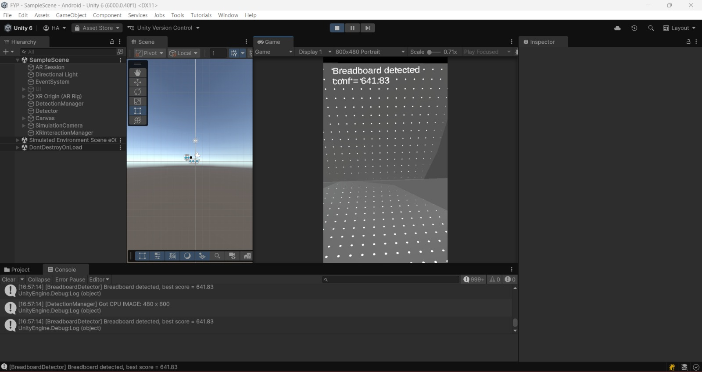
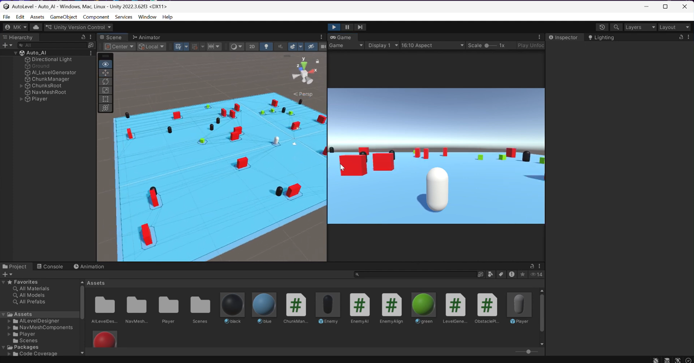
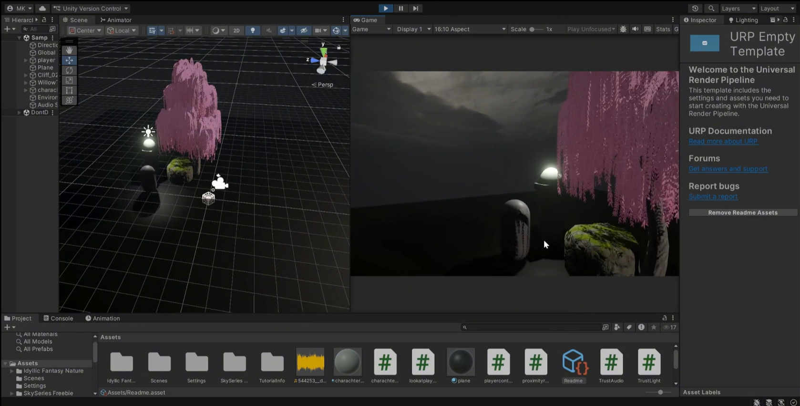
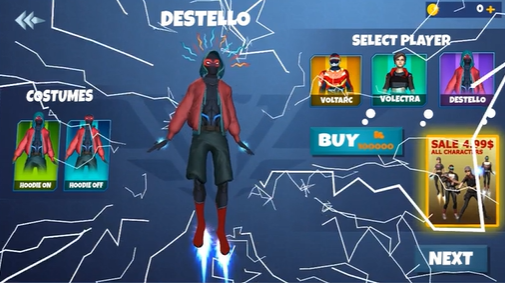
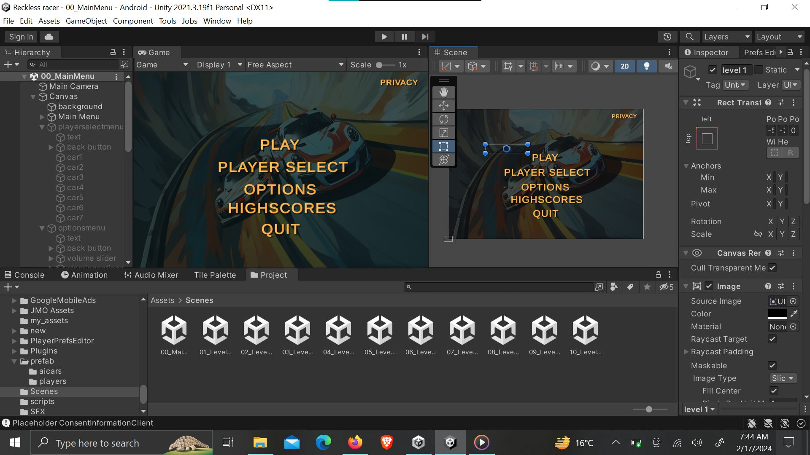
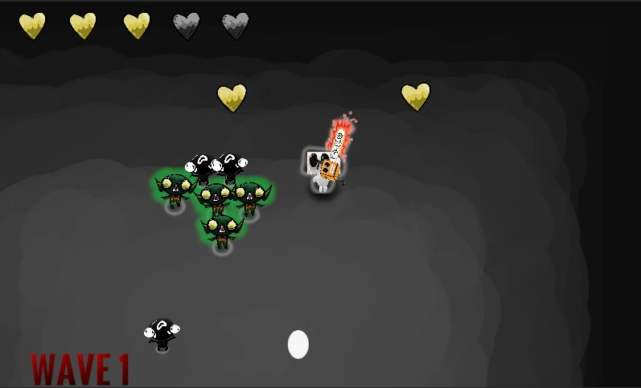

Extended Reality • 3D Vision & Graphics • Machine Learning for Interactive Systems
I build and study interactive 3D systems and the AI behind them, with a focus on extended reality. This summer at the National University of Singapore I worked with Dr. Anand Bhojan on 3D Gaussian Splatting for standalone VR, and built a system that lets people physically interact with Gaussian Splatting objects directly on a Meta Quest 3. That project is what convinced me I want to do research. Alongside graphics, I am interested in machine learning and reinforcement learning, especially for perception and intelligent agents inside 3D environments.
Before that I spent several years building real-time interactive software: mobile games in Unity at two studios, an on-device AR recognition app for my final year project, and a computer vision project on cross-view road-image correspondence. I want to keep working on immersive environments that are not only visually convincing but physically meaningful to interact with.
Having grown up across the United States, Canada, and Pakistan, I am interested in how interactive systems can be made accessible and engaging for people in very different places.
BS Computer Systems Engineering, UET Peshawar, 2026 (GPA 3.61 / 4.00)
Demo video available after paper submission.
Investigated automatically finding four corresponding anchor points between side-view and top-down road images to estimate a homography. Experimented with feature matching (ORB, SIFT/FLANN, LoFTR with RANSAC), geometric cues (Hough and LSD line intersections), and SegFormer road segmentation.
M. K. Khan and A. Bhojan. Physics-Aware Gaussian Splatting Interaction in Standalone Virtual Reality. Manuscript in preparation for IEEE AIVR.

On-device YOLOv8n detection + AR overlays (Final Year Project).

Runtime terrain + NavMesh procedural agents.

Non-verbal agent interaction prototype.

Combat, traversal, UI, animation workflow.

Waypoint AI + track design + UI flow.

Wave enemy spawner + combat logic.
Email: kamilkhan6850@gmail.com
GitHub: github.com/KamilKhan23